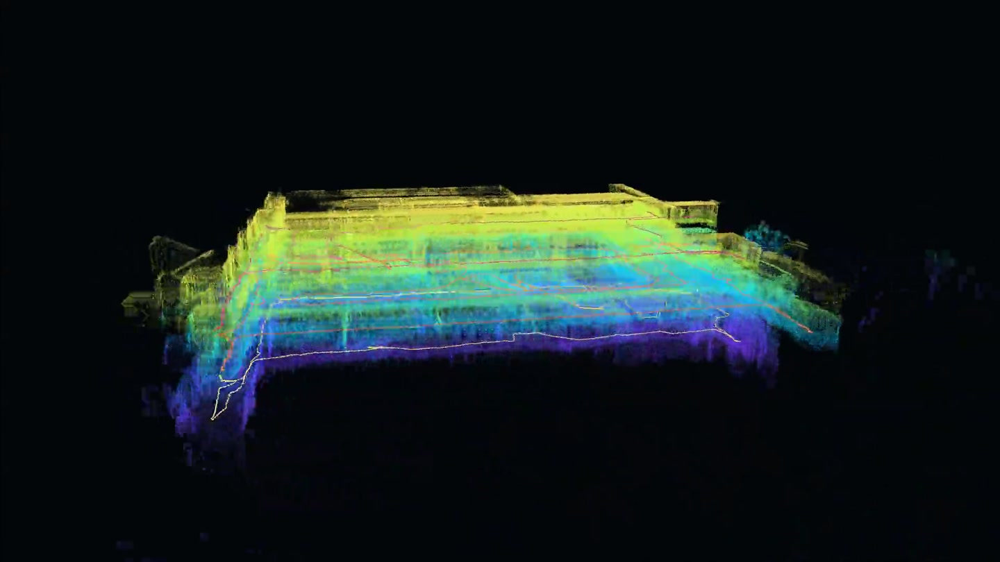

Autonomous quadruped exploration
Quad-Explorer:A Voxel-Centric Autonomous Quadruped 3D Exploration System in Large Dynamic Environments

In the real world
Six buildings. Six explorations.
Watch each experiment, from onboard views and local planning to the final 3D map. Click to play; original 1080p videos are also available.
Experiment Settings
- Robot
- Unitree GO2W
- Onboard Computer
- Jetson Orin NX 16GB
- LiDAR
- Livox MID-360S